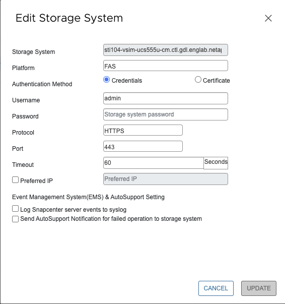

概念
概念
本繁體中文版使用機器翻譯，譯文僅供參考，若與英文版本牴觸，應以英文版本為準。
管理儲存系統
貢獻者
 建議變更
建議變更
在使用VMware vSphere用戶端備份或還原VM或資料存放區之前、您必須先新增儲存設備。
修改儲存VM
您可以使用VMware vSphere用戶端來修改叢集和儲存VM的組態、這些叢集和VM已登錄SnapCenter 於VMware vSphere的VMware Plug-in中、並用於VM資料保護作業。
如果您修改的儲存VM是自動新增為叢集的一部分（有時稱為隱含式儲存VM）、則該儲存VM會變更為明確的儲存VM、而且可以在不變更該叢集中其餘儲存VM的情況下個別刪除。在「Storage Systems」（儲存系統）頁面上、當驗證方法透過憑證時、使用者名稱會顯示為N/A；使用者名稱只會顯示在叢集清單中的明確儲存VM、並將「ExploricitSVM」旗標設為true。所有儲存VM都會列在相關的叢集下方。

|
如果您使用SnapCenter 此功能、為應用程式型資料保護作業新增儲存VM、則必須使用相同的GUI來修改這些儲存VM。 |
步驟
-
在選擇控制閥外掛程式的左側導覽器窗格中、按一下*儲存系統*。
-
在 * 儲存系統 * 頁面上、選取要修改的儲存 VM 、然後選取 * 編輯 * 。
-
在*編輯儲存系統*視窗中、輸入新值、然後按一下*更新*以套用變更。

移除儲存VM
您可以使用VMware vSphere用戶端、從vCenter的詳細目錄中移除儲存VM。

|
如果您使用SnapCenter 此功能、為應用程式型資料保護作業新增儲存VM、則必須使用相同的GUI來修改這些儲存VM。 |
開始之前
您必須先卸載儲存VM中的所有資料存放區、才能移除儲存VM。
關於這項工作
如果資源群組的備份位於您移除的儲存VM上、則該資源群組的後續備份將會失敗。
步驟
-
在選擇控制閥外掛程式的左側導覽器窗格中、按一下*儲存系統*。
-
在「儲存系統」頁面上、選取要移除的儲存VM、然後按一下「刪除」。
-
在「移除儲存系統」確認方塊中、勾選「刪除儲存系統」方塊、然後按一下「是」確認。*附註：*僅支援ESXi 7.0U1及更新版本。